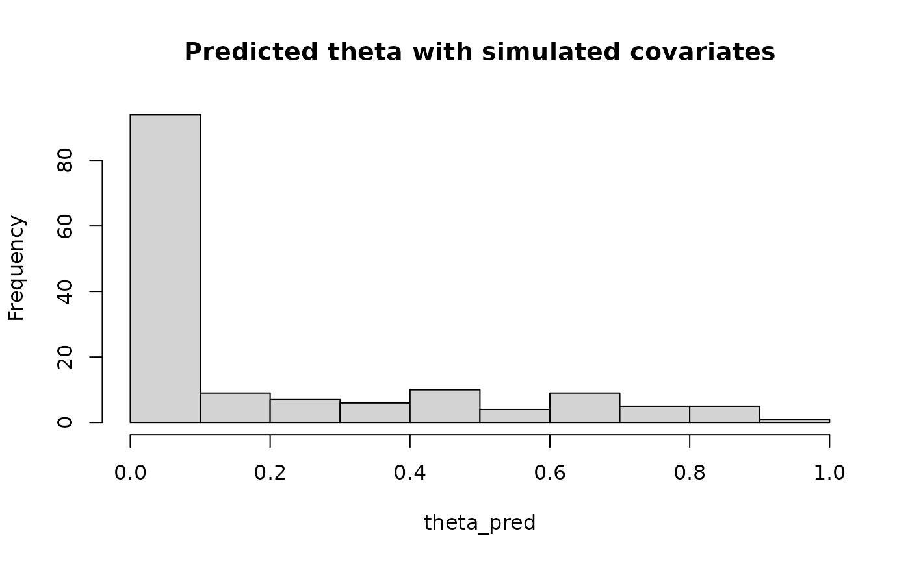

Prediction of species probabilities of occurrence from models fitted using the jSDM package
An object of class "jSDM".
An optional data frame in which explanatory variables can be searched for prediction. If omitted, the adjusted values are used.
An vector of character or integer indicating for which species the probabilities of presence on chosen sites will be predicted.
An vector of integer indicating for which sites the probabilities of presence of specified species will be predicted.
Type of prediction. Can be :
"mean" | for predictive posterior mean. |
"quantile" | for producing sample quantiles from the predictive posterior, |
corresponding to the given probabilities (see probs argument). | |
"posterior" | for the full predictive posterior for each prediction. |
Using "quantile" or "posterior" might lead to memory problem depending on the number of predictions and the number of samples for the jSDM model's parameters.
Numeric vector of probabilities with values in [0,1],
used when type="quantile".
Further arguments passed to or from other methods.
Return a vector for the predictive posterior mean when type="mean", a data-frame with the mean and quantiles when type="quantile" or an mcmc object (see coda package) with posterior distribution for each prediction when type="posterior".
library(jSDM)
# frogs data
data(frogs, package="jSDM")
# Arranging data
PA_frogs <- frogs[,4:12]
# Normalized continuous variables
Env_frogs <- cbind(scale(frogs[,1]),frogs[,2],scale(frogs[,3]))
colnames(Env_frogs) <- colnames(frogs[,1:3])
# Parameter inference
# Increase the number of iterations to reach MCMC convergence
mod<-jSDM_binomial_probit(# Response variable
presence_data=PA_frogs,
# Explanatory variables
site_formula = ~.,
site_data = Env_frogs,
n_latent=2,
site_effect="random",
# Chains
burnin=100,
mcmc=100,
thin=1,
# Starting values
alpha_start=0,
beta_start=0,
lambda_start=0,
W_start=0,
V_alpha=1,
# Priors
shape=0.5, rate=0.0005,
mu_beta=0, V_beta=10,
mu_lambda=0, V_lambda=10,
# Various
seed=1234, verbose=1)
#>
#> Running the Gibbs sampler. It may be long, please keep cool :)
#>
#> **********:10.0%
#> **********:20.0%
#> **********:30.0%
#> **********:40.0%
#> **********:50.0%
#> **********:60.0%
#> **********:70.0%
#> **********:80.0%
#> **********:90.0%
#> **********:100.0%
# Select site and species for predictions
## 30 sites
Id_sites <- sample.int(nrow(PA_frogs), 30)
## 5 species
Id_species <- sample(colnames(PA_frogs), 5)
# Predictions
theta_pred <- predict(mod,
Id_species=Id_species,
Id_sites=Id_sites,
type="mean")
hist(theta_pred, main="Predicted theta with simulated covariates")
